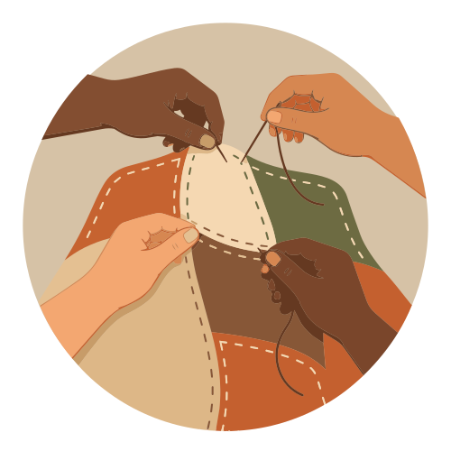
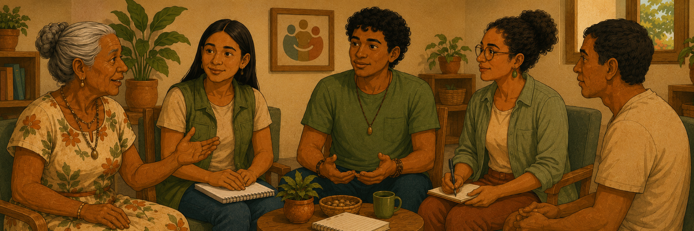
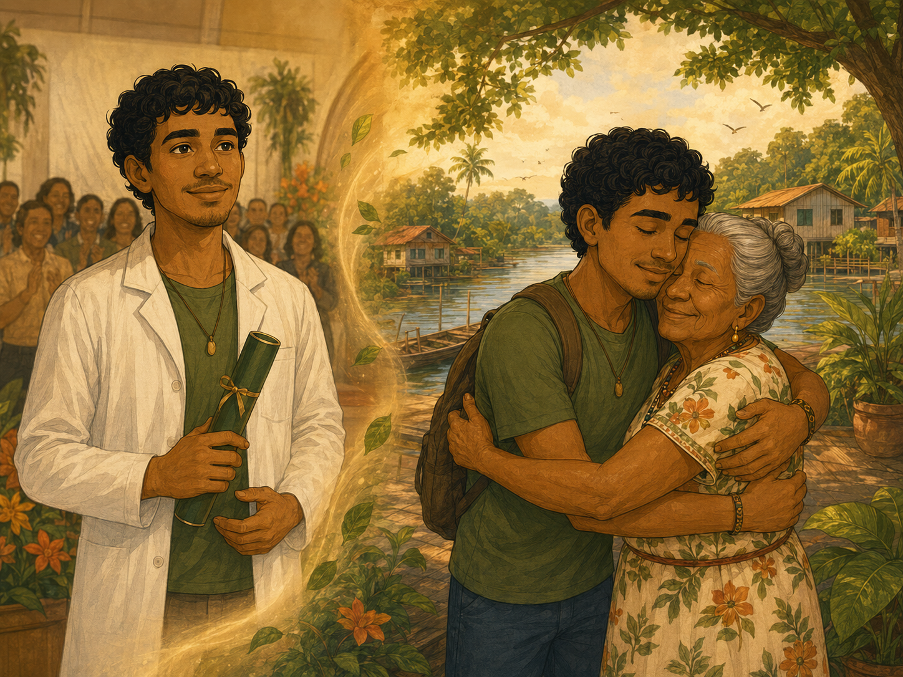
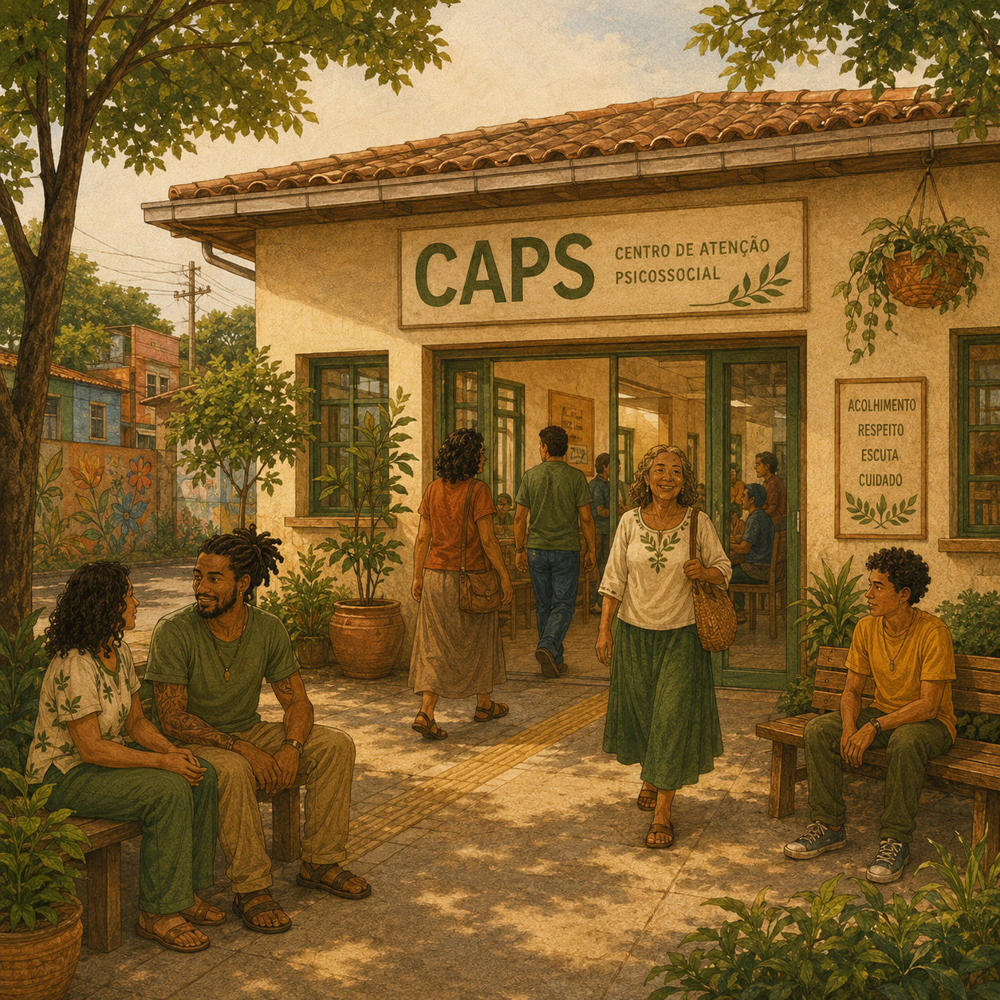
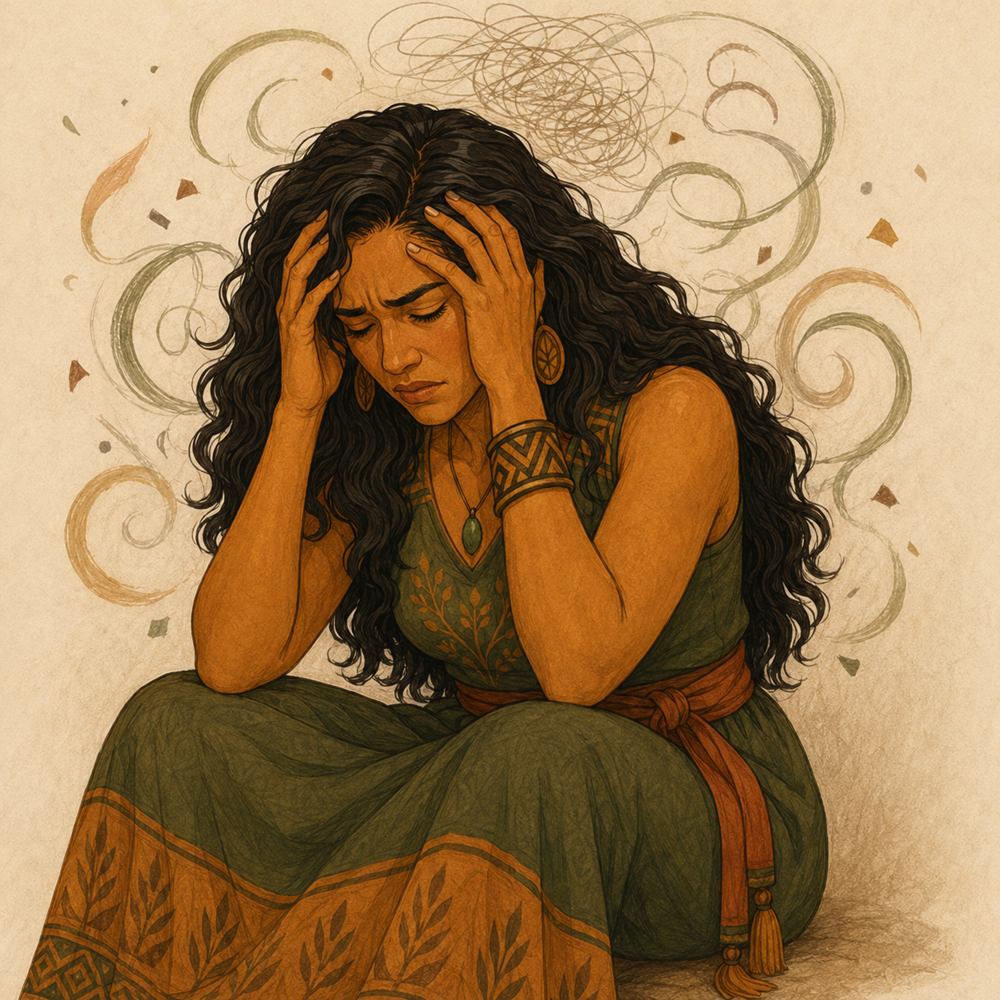
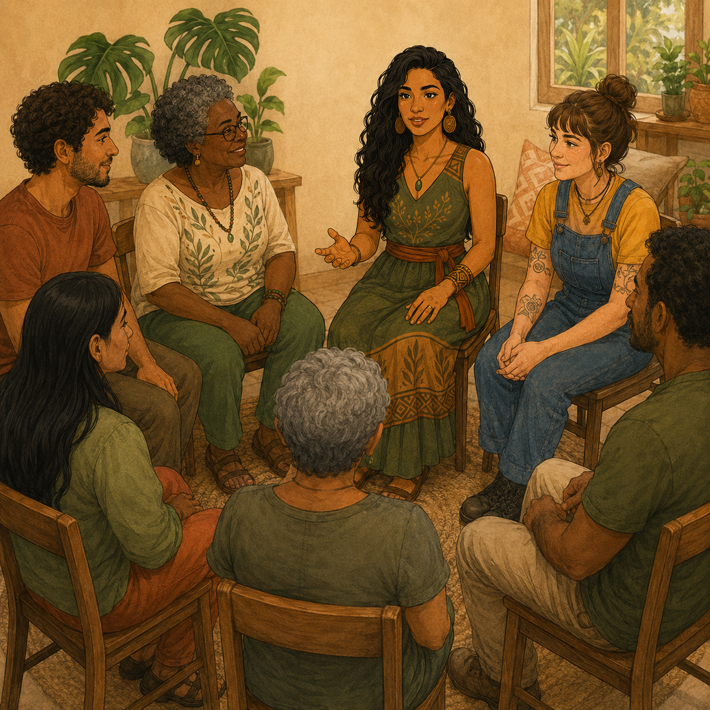
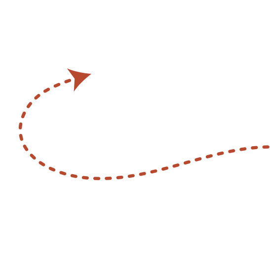
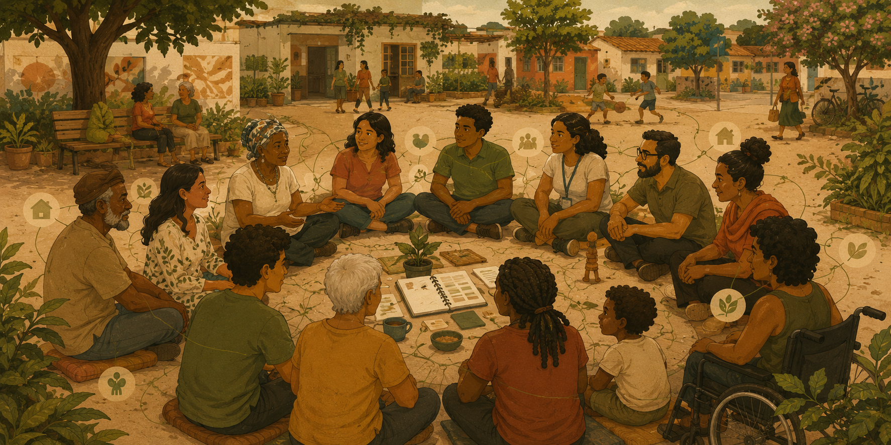

Continuar de onde parou?
Deseja continuar de onde parou?


Módulo 4 – Prática no manejo de situações de crise
Objetivos

Objetivo geral:
Fortalecer a capacidade dos cursistas de analisar percursos de vida e processos de cuidado singular em diferentes territórios, promovendo a articulação entre estratégias indiretas e imediatas e a apropriação das ferramentas apresentadas, de modo a qualificar práticas de acompanhamento e a continuidade do cuidado.
Objetivo específicos:
Ao final desta aula, você deverá ser capaz de:
- analisar percursos de vida apresentados por diferentes usuários, identificando contradições e singularidades nos processos de cuidado em distintos territórios;
- compreender como a disponibilidade ou ausência de equipamentos de saúde influencia práticas de cuidado e estratégias de acompanhamento;
- articular estratégias indiretas e imediatas de cuidado, reconhecendo seus usos, limites e potencialidades nos contextos apresentados;
- experimentar as ferramentas construídas e apresentadas no módulo;
- refletir sobre o tecimento da vida como processo contínuo, relacional e territorial.

Juarez e as fronteiras do cuidado: bem viver e atenção psicossocial
Clique em cada ícone de áudio ou acesse a transcrição aqui.

Clique em cada ícone de áudio ou acesse a transcrição aqui.

Clique em cada ícone de áudio ou acesse a transcrição aqui.

Clique em cada ícone de áudio ou acesse a transcrição aqui.

Clique em cada ícone de áudio ou acesse a transcrição aqui.

Clique em cada ícone de áudio ou acesse a transcrição aqui.

Clique em cada ícone de áudio ou acesse a transcrição aqui.

Clique em cada ícone de áudio ou acesse a transcrição aqui.

Clique em cada ícone de áudio ou acesse a transcrição aqui.
A história de Juarez, seus familiares, seu território e a equipe que operou o cuidado nos trazem muitas possibilidades de refletir sobre a atenção à crise, desde as estratégias indiretas até as imediatas.
Do ponto de vista da avaliação da crise, observamos que esse processo não se restringiu somente à intervenção do SAMU. De fato, fora o primeiro contato de Juarez com a rede, mas não tardou para que novos processos de cuidado e avaliação acontecessem: no Hospital de Clínicas, no encontro com Dona Neuza, no acolhimento do CAPS, no retorno à comunidade do Itacuruçá, nas conversas com a ACS, entre outros momentos que possibilitaram atualizar as impressões que se tem sobre ele, seu estado mental, o impacto das estratégias de cuidado e outras questões.


A história de Juarez, seus familiares, seu território e a equipe que operou o cuidado nos trazem muitas possibilidades de refletir sobre a atenção à crise, desde as estratégias indiretas até as imediatas.
Do ponto de vista da avaliação da crise, observamos que esse processo não se restringiu somente à intervenção do SAMU. De fato, fora o primeiro contato de Juarez com a rede, mas não tardou para que novos processos de cuidado e avaliação acontecessem: no Hospital de Clínicas, no encontro com Dona Neuza, no acolhimento do CAPS, no retorno à comunidade do Itacuruçá, nas conversas com a ACS, entre outros momentos que possibilitaram atualizar as impressões que se tem sobre ele, seu estado mental, o impacto das estratégias de cuidado e outras questões.

No primeiro momento – talvez em função da dificuldade de dialogar – o caminho indicado foi a internação psiquiátrica. Juarez morava sozinho e não tinha vínculos importantes com as pessoas onde trabalhava e residia. A chegada de sua avó possibilitou conhecer o histórico clínico e psicossocial e o diagnóstico diferencial. Neuza entra em cena, negocia alternativas menos invasivas e organiza o retorno para Abaetetuba, em diálogo com o CAPS. Novas possibilidades, novas aberturas e novas avaliações: constroem em conjunto o retorno à comunidade. Somou-se à avaliação dos riscos da equipe a do território, que identificaram o retorno a Belém como algo a ser evitado inicialmente. O estado em que se encontrava fora tido como vulnerável em função de seu afastamento, e o pertencimento como terapêutica a ser mantida.

No primeiro momento – talvez em função da dificuldade de dialogar – o caminho indicado foi a internação psiquiátrica. Juarez morava sozinho e não tinha vínculos importantes com as pessoas onde trabalhava e residia. A chegada de sua avó possibilitou conhecer o histórico clínico e psicossocial e o diagnóstico diferencial. Neuza entra em cena, negocia alternativas menos invasivas e organiza o retorno para Abaetetuba, em diálogo com o CAPS. Novas possibilidades, novas aberturas e novas avaliações: constroem em conjunto o retorno à comunidade. Somou-se à avaliação dos riscos da equipe a do território, que identificaram o retorno a Belém como algo a ser evitado inicialmente. O estado em que se encontrava fora tido como vulnerável em função de seu afastamento, e o pertencimento como terapêutica a ser mantida.
O planejamento para eventuais crises futuras também se fez presente. Quando as pessoas de referência do SUS se dedicam a dialogar sobre o cuidado que deve ser posto em prática, novos horizontes se apresentam. Como cuidar? O que não fazer? A construção das diretivas antecipadas (DA) e do cartão de crise não pode ser ignorada, pois apresenta indícios importantes do manejo da crise a ser construído em possíveis vivências de situações difíceis. Além de orientar outras equipes ainda não familiarizadas com as pessoas acompanhadas, essas estratégias fortalecem os vínculos com as pessoas e equipes de referência, bem como podem produzir mais segurança nas tomadas de decisão de pessoas como Dona Neuza.

O matriciamento também emerge como uma potência do cuidado. Ele é um exercício de diálogo e articulação com a rede de serviços disponíveis no território da pessoa acompanhada, com definições de responsabilidades entre os níveis de atenção em saúde. Nada mais é do que a construção de vínculos entre pessoas de instituições diferentes que se interessam sobre uma pessoa, família e comunidade da qual o usuário faz parte. Ações como orientações, encaminhamentos, processos formativos e troca de informações fazem parte desse processo.

Matriciar é mobilizar as referências do território, construindo com estas estratégias importantes para o cuidado. Envolve não somente os dispositivos da saúde, podendo englobar as políticas de educação, assistência social, justiça, habitação, organizações da sociedade civil, lideranças religiosas, referências do cuidado tradicional/ancestral, entre outras. No entanto, devemos lembrar que esses diálogos devem incluir a pessoa e a família, acolhendo as necessidades e especificidades delas. A máxima “nada sobre nós, sem nós” deve prevalecer.
Quais aspectos referentes à avaliação da crise de Juarez lhe chamou atenção?
O que você faria diferente?
Quanto às estratégias indiretas, quais você acredita que poderiam contribuir para o cuidado em saúde mental de Juarez, sua família e a comunidade do Itacuruçá?
Como você atuaria para que elas fossem colocadas em prática?

Márcia: a voz do fogo
Para conhecer a história de Márcia, escute os áudios na timeline ou acesse a transcrição aqui.





A conferência de Jurandir Freire Costa na posse da direção do IPQ (Pedro Gabriel) propõe uma reflexão que ilumina o caso Márcia com precisão. Jurandir fala de uma psiquiatria que deve abandonar o protocolo fixo, a categoria cristalizada, para reencontrar a experiência viva do sofrimento. Ele recorda, a partir de Basaglia, que o ponto de partida do cuidado não é a doença, mas o sofrimento, e que a escuta deve privilegiar a autoria em primeira pessoa. Assim, podemos compreender Márcia não como portadora de um transtorno ou de um comportamento querelante, uma pessoa agressiva, mas como autora de um discurso sobre a própria dor – um discurso fragmentado, às vezes excessivo, mas profundamente humano.
A conferência está disponível em: https://www.youtube.com/watch?v=4PJ-Zl8Hw8U&t=1943s.
Nesse âmbito, sugerimos a você conhecer o trabalho do professor Eduardo Mourão de Vasconcelos, o qual tem vasta experiência e contribuição para a Reforma Psiquiátrica brasileira, a discussão de direitos humanos e o protagonismo de usuários e familiares.
O livro “Novos Horizontes em Saúde Mental” (Vasconcelos, 2021) traz uma perspectiva histórica de diretivas antecipadas, plano e cartão de crise, bem como um caminho para implementação do dispositivo.

Nessa história, como em diversas outras, a crise é a forma de comunicar o sofrimento insuportável, no sentido inclusive de não encontrar suporte no mundo para o sujeito existir. O que as equipes chamam de “personalidade difícil” ou “manipulação” é a forma com que o sujeito tenta resistir à dissolução de si. O prontuário que classifica – “sem adesão, agressiva, querelante” – é também um espelho das defesas institucionais. A recusa de escutar é a recusa de reconhecer o outro.
O acompanhamento de Márcia foi, portanto, um trabalho de reflexão coletiva. Cada visita, cada grupo, cada vídeo compartilhado se tornou uma construção de possibilidades de sonhar, ou de fantasiar, de lançar a vida. A equipe aprendeu com ela a não se proteger com certezas, mas a sustentar o campo da dúvida; não se trata de saber o que é verdadeiro, mas de criar espaço para que os sentidos surjam no vínculo.
Assim, a história de Márcia não se encerra em diagnósticos ou estratégia individualizada. Ela nos mostra que o cuidado em liberdade é o lugar onde o sujeito pode reconstruir nas diversas conexões que aumentam sua potência, nesse caso, de queimar sem arder.
Encerramento
Ao longo deste curso, revisitamos criticamente a história da Reforma Psiquiátrica e reafirmamos que ela não é apenas um conjunto de dispositivos ou normas, mas um processo ético, político e cotidiano, que se realiza nas práticas concretas de cuidado de cada serviço, de cada gestor, trabalhador, usuários e famílias. A atenção às situações de crise mostrou-se um ponto estratégico desse percurso: nela se evidenciam os limites da rede, as ideias e as crenças que orientam as decisões e o risco permanente de retorno a respostas coercitivas e manicomiais.
Cuidar de alguém em situação de crise é realizar a ação primordial de nosso campo, acolher um momento de sofrimento intenso, e, para isso, é preciso sustentar a dignidade, os direitos e a possibilidade de vida em liberdade cotidianamente.
A partir das experiências discutidas, ancoradas no território e no cuidado em rede, foi possível compreender que o sofrimento psíquico não se produz isoladamente no indivíduo, mas emerge das relações entre corpo, história, território e vínculos sociais. O conceito de corpo-território nos convocou a ampliar o olhar para além do diagnóstico e do sintoma, reconhecendo que violências sociais, raciais, ambientais e institucionais produzem crises de diversas ordens, inclusive psíquicas. Nesse sentido, a crise deixa de ser apenas ruptura ou perigo e passa a ser entendida como momento de vulnerabilidade situada, e é tarefa de quem cuida garantir que tal vulnerabilidade e desamparo sejam vividos de maneira transformadora, positiva, e não mais só como momento de perda de vínculos, sentidos e valor.

O objetivo principal do curso que aqui se finaliza é reafirmar que uma sociedade sem manicômios se sustenta na invenção permanente do cotidiano, na vitalidade das redes e na corresponsabilidade entre serviços, trabalhadores, usuários, famílias e territórios. Não há cuidado em liberdade sem disponibilidade para escutar, negociar, sustentar conflitos e decidir coletivamente. Defender a atenção a situações de crise como prática ética é defender uma saúde mental comprometida com a vida comum e o poder local, com a democracia e com a esperança de que o sofrimento não precise se fechar em destino, mas possa se transformar em travessia.
